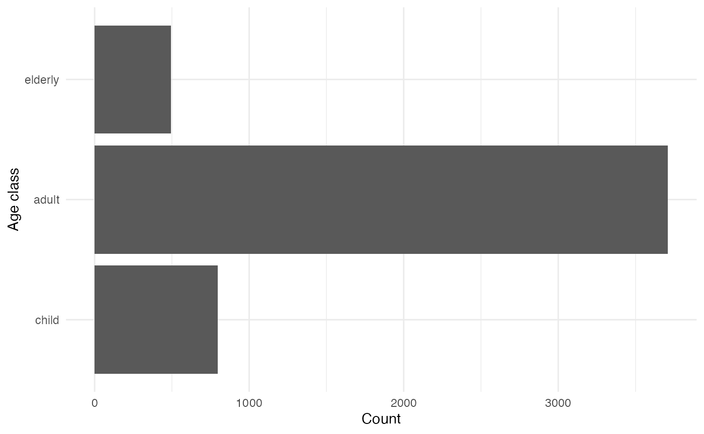
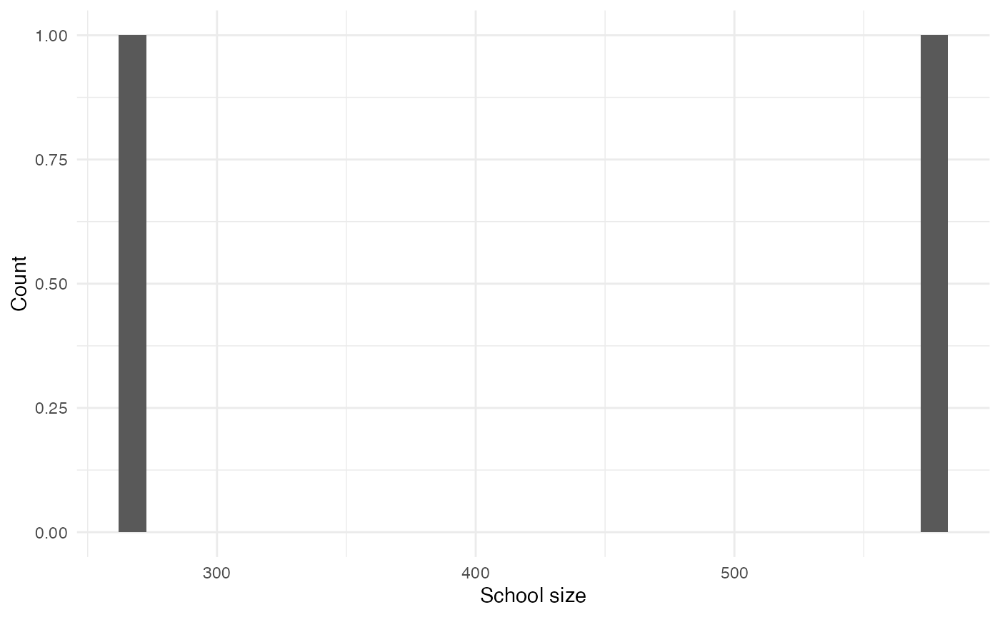
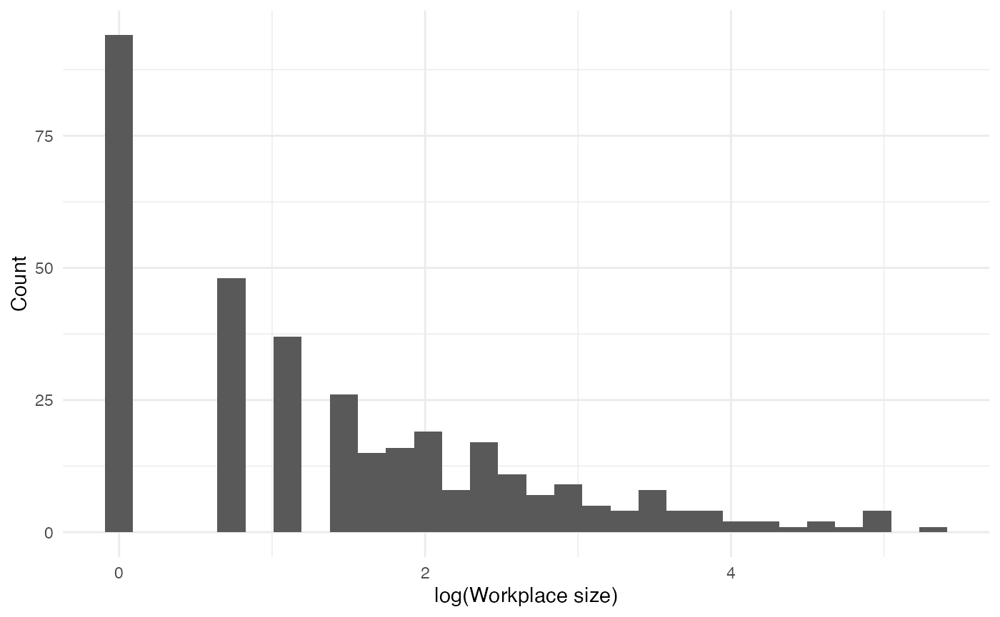

Introduction
helios is an R package which allows users to simulate
the impact of far UVC
interventions in curtailing the spread of infectious disease outbreaks.
In this vignette, we demonstrate basic use of the package.
library(helios)
library(individual)
library(ggplot2)
library(dplyr)
#>
#> Attaching package: 'dplyr'
#> The following objects are masked from 'package:stats':
#>
#> filter, lag
#> The following objects are masked from 'package:base':
#>
#> intersect, setdiff, setequal, union
library(purrr)
theme_set(theme_minimal())Parameters
First, define constant parameters. In this vignette, we set the
human_population to 1000. Otherwise, we use the default
options:
parameters_list <- get_parameters(
list(
human_population = 1000,
seed = 1,
household_distribution_generation = "sampling",
school_distribution_generation = "sampling"
)
)The names of all parameters are as follows:
names(parameters_list)
#> [1] "human_population" "initial_proportion_child"
#> [3] "initial_proportion_adult" "initial_proportion_elderly"
#> [5] "number_initially_exposed" "seed"
#> [7] "mean_household_size" "workplace_prop_max"
#> [9] "workplace_a" "workplace_c"
#> [11] "school_prop_max" "school_meanlog"
#> [13] "school_sdlog" "leisure_prob_visit"
#> [15] "leisure_mean_number_settings" "leisure_mean_size"
#> [17] "leisure_overdispersion_size" "leisure_prop_max"
#> [19] "duration_exposed" "duration_infectious"
#> [21] "beta_household" "beta_workplace"
#> [23] "beta_school" "beta_leisure"
#> [25] "beta_community" "dt"
#> [27] "simulation_time" "household_distribution_generation"
#> [29] "school_distribution_generation" "endemic_or_epidemic"
#> [31] "duration_immune"Variables
Next, we define the model variables:
variables_list <- create_variables(parameters_list)
names(variables_list)
#> [1] "disease_state" "age_class" "workplace" "school"
#> [5] "household" "leisure" "specific_leisure"Aside from $leisure, each entry of
variables_list is of the CategoricalVariable
class:
map(variables_list, class)
#> $disease_state
#> [1] "CategoricalVariable" "R6"
#>
#> $age_class
#> [1] "CategoricalVariable" "R6"
#>
#> $workplace
#> [1] "CategoricalVariable" "R6"
#>
#> $school
#> [1] "CategoricalVariable" "R6"
#>
#> $household
#> [1] "CategoricalVariable" "R6"
#>
#> $leisure
#> [1] "RaggedInteger" "R6"
#>
#> $specific_leisure
#> [1] "CategoricalVariable" "R6"Some variables change over time, while other remain fixed.
Disease states
Outbreaks are implemented as individual-level SEIR compartmental models.
(disease_states <- variables_list$disease_state$get_categories())
#> [1] "S" "E" "I" "R"The number of individuals initially exposed is controlled by
parameters_list$number_initially_exposed.
disease_state_counts <- purrr::map_vec(disease_states, function(x) variables_list$disease_state$get_size_of(values = x))
data.frame("State" = disease_states, "Count" = disease_state_counts) |>
gt::gt()| State | Count |
|---|---|
| S | 995 |
| E | 5 |
| I | 0 |
| R | 0 |
Age classes
Age classes remain fixed and are as follows:
(age_classes <- variables_list$age_class$get_categories())
#> [1] "child" "adult" "elderly"
age_class_counts <- purrr::map_vec(age_classes, function(x) variables_list$age_class$get_size_of(values = x))
data.frame(age_classes, age_class_counts) |>
ggplot(aes(x = age_classes, y = age_class_counts)) +
geom_col() +
labs(x = "Age class", y = "Count") +
coord_flip()
Workplaces
Each adult attends a fixed workplace:
workplaces <- variables_list$workplace$get_categories()
workplaces <- workplaces[workplaces != "0"]
workplace_sizes <- purrr::map_vec(workplaces, function(x) variables_list$workplace$get_size_of(values = x))
data.frame(workplace_sizes) |>
ggplot(aes(x = log(workplace_sizes))) +
geom_histogram() +
labs(x = "log(Workplace size)", y = "Count")
#> `stat_bin()` using `bins = 30`. Pick better value with `binwidth`.
Schools
Each child attends a fixed school:
schools <- variables_list$school$get_categories()
schools <- schools[schools != "0"]
school_sizes <- purrr::map_vec(schools, function(x) variables_list$school$get_size_of(values = x))
data.frame(school_sizes) |>
ggplot(aes(x = log(school_sizes))) +
geom_histogram() +
labs(x = "log(School size)", y = "Count")
#> `stat_bin()` using `bins = 30`. Pick better value with `binwidth`.
Households
Children, adults and elderly people are grouped into fixed households:
households <- variables_list$household$get_categories()
household_sizes <- purrr::map_vec(households, function(x) variables_list$household$get_size_of(values = x))
table(household_sizes) |>
data.frame() |>
ggplot(aes(x = household_sizes, y = Freq)) +
geom_col() +
labs(x = "Household size", y = "Count")
What is the age distribution in households?
household_df <- purrr::map_df(households, function(x) {
indices <- variables_list$household$get_index_of(values = x)$to_vector()
if(length(indices > 0)) data.frame("individual" = indices, "household" = as.numeric(x))
})
age_df <- purrr::map_df(age_classes, function(x) {
indices <- variables_list$age_class$get_index_of(values = x)$to_vector()
if(length(indices > 0)) data.frame("individual" = indices, "age_class" = x)
})
household_df |>
left_join(age_df, by = "individual") |>
group_by(household) |>
summarise(
child = sum(age_class == "child"),
adult = sum(age_class == "adult"),
elderly = sum(age_class == "elderly")
) |>
group_by(child, adult, elderly) |>
summarise(
count = n()
) |>
ungroup() |>
arrange(desc(count)) |>
head() |>
gt::gt()
#> `summarise()` has grouped output by 'child', 'adult'. You can override using
#> the `.groups` argument.| child | adult | elderly | count |
|---|---|---|---|
| 0 | 1 | 0 | 138 |
| 0 | 2 | 0 | 54 |
| 1 | 0 | 0 | 37 |
| 1 | 1 | 0 | 36 |
| 0 | 0 | 1 | 35 |
| 0 | 1 | 1 | 35 |
Leisure
Each week, individuals attend leisure venues:
leisure_places <- variables_list$leisure$get_values()
number_leisure_places <- sapply(leisure_places, function(x) sum(x > 0))
table(number_leisure_places) |>
data.frame() |>
ggplot(aes(x = number_leisure_places, y = Freq)) +
geom_col() +
labs(x = "Number of leisure places attended in a week", y = "Count")
Events
events_list <- create_events(variables_list = variables_list, parameters_list = parameters_list)
names(events_list)
#> [1] "EI_event" "IR_event"Each event is in the TargetedEvent
class:
lapply(events_list, class)
#> $EI_event
#> [1] "TargetedEvent" "EventBase" "R6"
#>
#> $IR_event
#> [1] "TargetedEvent" "EventBase" "R6"Render
We use a fixed number of time-steps to simulate over:
timesteps <- round(parameters_list$simulation_time / parameters_list$dt)The object renderer is of class Render:
Processes
processes_list <- create_processes(
variables_list = variables_list,
events_list = events_list,
parameters_list = parameters_list,
renderer = renderer
)
names(processes_list)
#> [1] "SE_process" "EI_process" "IR_process" ""Simulate
See individual::simulation_loop:
individual::simulation_loop(
variables = variables_list,
events = events_list,
processes = processes_list,
timesteps = timesteps
)
#> [1] "timestep = 5"
#> [1] "timestep = 10"
#> [1] "timestep = 15"
#> [1] "timestep = 20"
#> [1] "timestep = 25"
#> [1] "timestep = 30"
#> [1] "timestep = 35"
#> [1] "timestep = 40"
#> [1] "timestep = 45"
#> [1] "timestep = 50"
#> [1] "timestep = 55"
#> [1] "timestep = 60"
#> [1] "timestep = 65"
#> [1] "timestep = 70"
#> [1] "timestep = 75"
#> [1] "timestep = 80"
#> [1] "timestep = 85"
#> [1] "timestep = 90"
#> [1] "timestep = 95"
#> [1] "timestep = 100"
#> [1] "timestep = 105"
#> [1] "timestep = 110"
#> [1] "timestep = 115"
#> [1] "timestep = 120"
#> [1] "timestep = 125"
#> [1] "timestep = 130"
#> [1] "timestep = 135"
#> [1] "timestep = 140"
#> [1] "timestep = 145"
#> [1] "timestep = 150"The output of the simulation is contained within
renderer, and can be accessed using the
to_dataframe() method:
states <- renderer$to_dataframe()
states |>
tidyr::pivot_longer(cols = ends_with("count"), names_to = "compartment", values_to = "value", names_pattern = "(.*)_count") |>
mutate(
compartment = forcats::fct_relevel(compartment, "S", "E", "I", "R")
) |>
ggplot(aes(x = timestep, y = value, col = compartment)) +
geom_line() +
scale_color_manual(values = c("royalblue3", "firebrick3", "darkorchid3", "orange2")) +
labs(x = "Time-step", y = "Count", col = "Compartment")